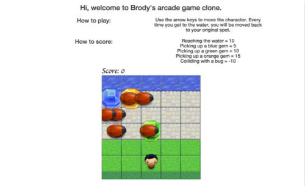
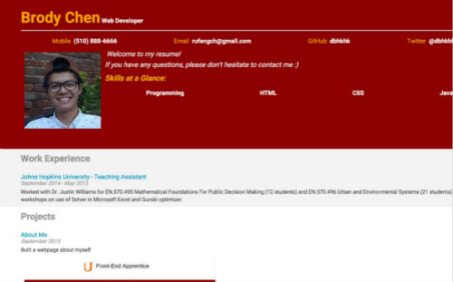
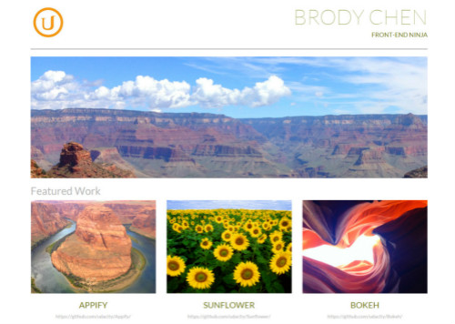
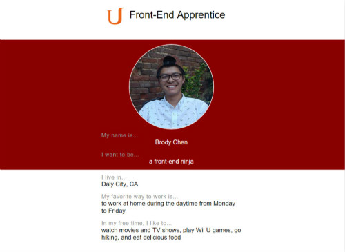

-

Classic Arcade Game Clone
I made my own version of the classic arcade game Frogger.
-

Interactive Resume
Take a look at my resume page!
-

Portfolio
A portfolio template page built with bootstrap.
-

About Me
My very first project at Udacity :)